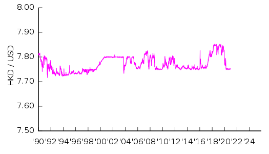

HongKong Dollar
The Hong Kong dollar (sign: HK$; code: HKD) is the official currency of Hong Kong. It is subdivided into 100 cents. The Hong Kong Monetary Authority is the governmental currency board and also the de facto central bank for Hong Kong and the Hong Kong dollar.
Under the licence from the Hong Kong Monetary Authority, three commercial banks are licensed to issue their own banknotes for general circulation in Hong Kong. The three commercial banks, HSBC, Bank of China and Standard Chartered issue their own designs of banknotes in denominations of HK$20, HK$50, HK$100, HK$500 and HK$1000, with all designs being similar to one another in the same denomination of banknote. However, the HK$10 banknote and all coins are issued by the Government of Hong Kong.
As of April 2019, the Hong Kong dollar is the ninth most traded currency in the world. Hong Kong uses a linked exchange rate system, trading since May 2005 in the range US$1:HK$7.75–7.85.
HKD/USD exchange rates since 1990.
Linked exchange rate system
Since 1983, the linked exchange rate system is a unique type of exchange rate regime used for the Hong Kong dollar to be pegged with the United States dollar at a fixed rate of HK$7.80 = US$1. In this unique linked exchange rate system, the Hong Kong Monetary Authority (HKMA) authorises the three note-issuing banks (HSBC, Bank of China and Standard Chartered) to issue new banknotes provided that they deposit an equivalent value of United States dollars with the HKMA.
In practice, in the unique linked exchange rate system, the exchange rate of HK$7.80 = US$1, is strictly controlled by the Hong Kong Monetary Authority in the foreign exchange market by controlling supply and demand of Hong Kong dollars in order to influence the exchange rate being fixed. By this arrangement the HKMA guarantees to exchange United States dollar into Hong Kong dollars and vice versa, at the rate of 7.80. When the market rate is below 7.80, the banks will convert United States dollar for Hong Kong dollars from the HKMA, Hong Kong dollars supply will increase, and the market rate will climb back to 7.80. The same mechanism also works when the market rate is above 7.80, and the banks will convert Hong Kong dollars for United States dollars.
By this arrangement, the Hong Kong dollar is backed by one of the world's largest foreign exchange reserves, which is over 7 times the amount of money supplied in circulation or about 48% of Hong Kong dollar M3 at the end of April 2016.